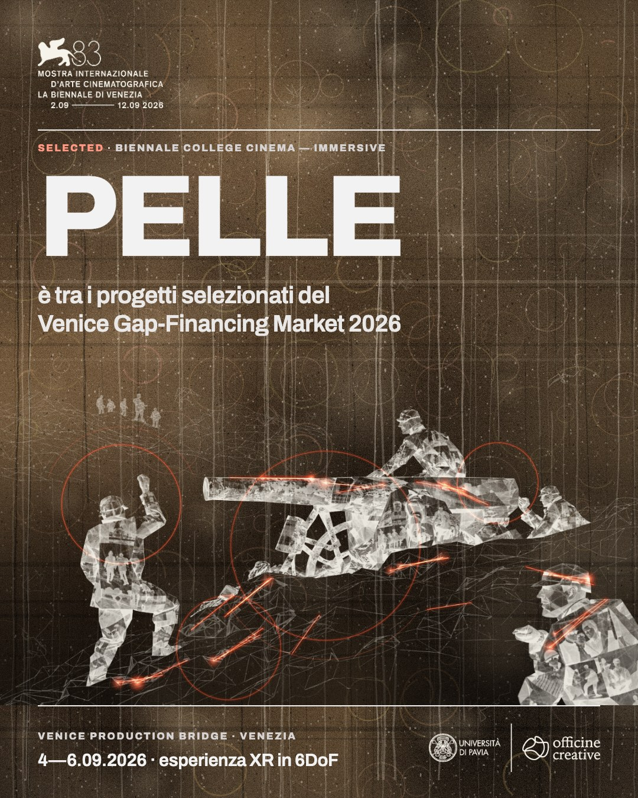

Selection
Venice Gap-Financing Market 2026

Contact
Pelle
- Directed by
- Stefano Conca Bonizzoni
- Produced by
- Virginia Valesio
Stefano Sburlati - Production
- Officine Creative — Università di Pavia
- Selections
- Biennale College Cinema Immersive 2025 · Venice Gap-Financing Market 2026
- Status
- In production
Partners
